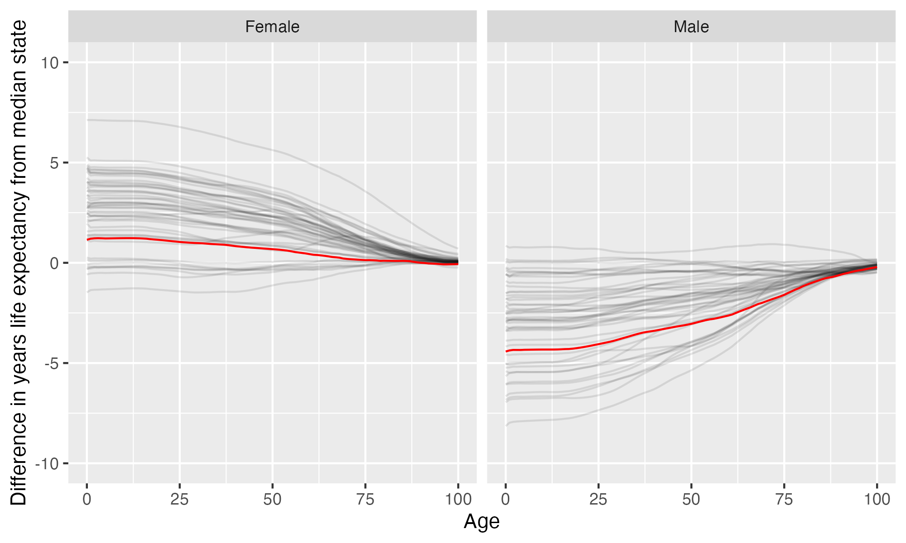

Brown Mackie College-Merrillville
Brown Mackie College-Merrillville is located in Merrillville, Indiana. It is a private for-profit, 4-year or above institution.
Notes
These are items that bear looking into more closely.
This institution has limited or no participation in the federal Title IV program. This prevents students from receiving some types of federal aid. Some institutions are ineligible for various reasons. Others could be eligible but choose not to receive federal funds in order to avoid following the requirements that go along with them, such as guidelines on how to respond to sexual assault or bans on some kinds of discrimination.
This institution’s revenues have tended to decrease over time.
This institution’s total assets have tended to decrease over time.
California considers the state this institution is in to have one or more anti-LGBTQ+ laws. It prohibits California-sponsored travel to this state as a safety measure. See more here.
There are apparently no tenure stream faculty. This can indicate a risk to academic freedom and thus educational quality, as faculty members may be able to lose their positions because of their speech, publications, or research findings.
This institution’s full-time undergraduate enrollment has tended to decrease over time.
From 2011 to 2017, full time undergraduate enrollment dropped from 582 to 80, a decline of 86.3%
Overview of institution
Institution kind: NA
Undergrad program: NA
Graduate program: NA
Enrollment profile: NA (see more details below)
Average net price for undergrads on financial aid: $17,818 (1.3 times the equivalent cost of Harvard).
Average net price for families with $30K-48K income: $ (This is $ NA what Harvard costs for equivalent students).
Actual price for your family: Go here to see what your family may be asked to pay. It can be MUCH lower than the average price but also higher for some.
Size and setting: NA
In state percentage: 90.9% of first year students come from Indiana
In US percentage: 100% of first year students come from the US
Graduation rate (within 6 years) for students seeking a Bachelors: 48.5% (this is what is usually reported as “graduation rate”)
Graduation rate (within 4 years) for students seeking a Bachelors: 32.4%
Percent of students seeking a Bachelors who transfer out of this institution: 8.8%
Student to tenure-stream faculty ratio: NA (undergrads to tenure-stream faculty) [Tenure explained]
Student to faculty ratio: 99.8 (undergrads to all faculty)
Degrees offered: Associate’s degree, Bachelor’s degree
Schedule: Quarter
Institution provides on campus housing: 2
Freshmen required to live on campus: -2
Meal plan: 3
Covid vaccination requirement for students: This institution was never reported as requiring covid vaccination for students (based on info from here)
Covid vaccination requirement for faculty/staff: This institution was never reported as requiring covid vaccination for faculty and/or staff (based on info from here)
Advanced placement (AP) credits used: Implied no
Disabilities: 1 of undergrads are registered as having disabilities.
Overview of location
- Abortion in this state: Restrictive (based on https://states.guttmacher.org/policies/ as of May 10, 2023)
- Gun law stringency: D- (higher grade = more stringent)
- State rep support for contraception: 22.2% of US reps from this state voted in favor of legal protections for contraception.
- State rep support for recognizing same-sex and interracial marriage: 22.2% of US reps from this state voted in favor of requiring states to recognize same-sex and interracial marriages performed in other states
- Anti-trans legislative risk: Worst (based on Erin Reed’s work, as of May 19, 2023)
- Ecological region: Central forest-grasslands transition
- Biome: Temperate Grasslands, Savannas & Shrublands
- Distance to mountains: 375.6 miles to Appalachian Mountains
- Climate: See overview at WeatherSpark
Similar institutions
This is using information about school size, acceptance rate, yield rate, graduation rate, cost, athletic conference, and similar metrics, but it can miss important axes of similarity (for example, culinary versus hair styling schools).
Map
Enrollment
| Brown Mackie College-Merrillville | Change over ≤ 7 years | Trend | -2 | |
|---|---|---|---|---|
| Undergrads (full time) | 80 (2017) |

|
↓ -92 per year |
|
| Undergrads (part time) | 43 (2017) |

|
||
| Graduation rate (bachelors in 6 years) | 49% (2017) |

|
✪✪✪ Better (higher) than 57% |
|
| Transfer out rate (bachelors) | 8.8% (2017) |

|
✪✪✪✪✪ Better (lower) than 81% |
Student financing
At many universities, almost no students pay the listed tuition and fees (“sticker price”): instead, their financial aid package lowers this dramatically, but how much students pay can vary substantially based on family income and other factors. The tuition below is the average across many students receiving aid: your family may be asked to pay less or more than this.
| Brown Mackie College-Merrillville | Change over ≤ 7 years | -2 | |
|---|---|---|---|
| Average net price (for students awarded aid) | $17,818 (2014) |

|
✪✪ Better (lower) than 27% |
| Undergrads getting federal aid | 89% (2016) |

|
✪✪✪✪✪ Better (higher) than 86% |
| Undergrads getting any aid | 94% (2016) |

|
✪✪✪✪ Better (higher) than 68% |
| Undergrads getting Pell grants | 89% (2016) |

|
✪✪✪✪✪ Better (higher) than 87% |
Teaching
| Brown Mackie College-Merrillville | Change over ≤ 7 years | -2 | |
|---|---|---|---|
| Undergrads per instructor (lower is better) | 100 (2015) |

|
✪ Better (lower) than 2% |
| Total instructors | 4 (2015) |

|
|
| Non-tenure track instructors | 4 (2015) |

|
Student details
Institution finances
| Brown Mackie College-Merrillville | Change over ≤ 7 years | Trend | -2 | |
|---|---|---|---|---|
| Revenue from tution and fees | 90% (2017) |

|
✪✪ Better (lower) than 27% |
|
| Revenue minus expenses | $2.6 M (2017) |

|
✪✪✪✪ Better (higher) than 75% |
|
| Revenue | $7.5 M (2017) |

|
↓ -$899,182 per year |
|
| Expenses | $4.9 M (2017) |

|
||
| Assets | $2.3 M (2017) |

|
↓ -$4.2 M per year |
✪ Better (higher) than 13% |
Graduation rates
Graduation rates for bachelor’s degrees within 150% of normal time (6 years for a 4-year degree). Note that this uses US federal demographic data: it only has two genders and a specified set of ethnicities and races. For groups with small numbers, the graduation rate may be highly variable year to year (do all three people in this group graduate this year or just two of three, for example).
| Brown Mackie College-Merrillville | Change over ≤ 7 years | -2 | |
|---|---|---|---|
| Total | 49% (2017) |

|
✪✪✪ Better (higher) than 57% |
| Men | 43% (2017) |

|
✪✪✪ Better (higher) than 58% |
| Women | 55% (2017) |

|
✪✪✪✪ Better (higher) than 61% |
| Asian men | 100% (2017) |

|
✪✪✪✪✪ Better (higher) than 100% |
| Asian women | 100% (2017) |

|
✪✪✪✪✪ Better (higher) than 100% |
| Black or African American men | 33% (2017) |

|
✪✪✪✪ Better (higher) than 63% |
| Black or African American women | 50% (2017) |

|
✪✪✪✪ Better (higher) than 74% |
| Hispanic men | 40% (2017) |

|
✪✪✪ Better (higher) than 60% |
| Hispanic women | 50% (2017) |

|
✪✪✪✪ Better (higher) than 64% |
| White men | 57% (2017) |

|
✪✪✪✪ Better (higher) than 70% |
| White women | 75% (2017) |

|
✪✪✪✪✪ Better (higher) than 84% |
| Nonresident alien men | 67% (2017) |

|
✪✪✪✪ Better (higher) than 65% |
| Nonresident alien women | 67% (2017) |

|
✪✪✪ Better (higher) than 55% |
Freshmen demographics
Demographic data for first time degree-seeking students. Note that this uses US federal demographic data: it only has two genders and a specified set of ethnicities and races.
| Brown Mackie College-Merrillville | Change over ≤ 7 years | |
|---|---|---|
| Men (percent freshmen) | 20% (2017) |

|
| Women (percent freshmen) | 80% (2017) |

|
| American Indian or Alaska Native men (percent freshmen) | 0% (2017) |

|
| American Indian or Alaska Native women (percent freshmen) | 0% (2017) |

|
| Asian men (percent freshmen) | 0% (2017) |

|
| Asian women (percent freshmen) | 0% (2017) |

|
| Black or African American men (percent freshmen) | 20% (2017) |

|
| Black or African American women (percent freshmen) | 40% (2017) |

|
| Hispanic men (percent freshmen) | 0% (2017) |

|
| Hispanic women (percent freshmen) | 0% (2017) |

|
| Native Hawaiian or Other Pacific Islander men (percent freshmen) | 0% (2017) |

|
| Native Hawaiian or Other Pacific Islander women (percent freshmen) | 0% (2017) |

|
| White men (percent freshmen) | 0% (2017) |

|
| White women (percent freshmen) | 20% (2017) |

|
| Two or more races men (percent freshmen) | 0% (2017) |

|
| Two or more races women (percent freshmen) | 20% (2017) |

|
| Race ethnicity unknown men (percent freshmen) | 0% (2017) |

|
| Race ethnicity unknown women (percent freshmen) | 0% (2017) |

|
| Nonresident alien men (percent freshmen) | 0% (2017) |

|
| Nonresident alien women (percent freshmen) | 0% (2017) |

|
Freshmen geography
| Brown Mackie College-Merrillville | Change over ≤ 7 years | |
|---|---|---|
| In state | 91% (2014) |

|
| US | 100% (2014) |

|
| Not reported | 0% (2014) |

|
Tenure track faculty
Tenure track faculty are those who are eligible for tenure. This includes both pre-tenure and tenured faculty. Once faculty get tenure, they are (generally) protected from being fired for intellectual reasons, helping to ensure their freedom in teaching and research. They can still lose their positions for misconduct, financial problems, not fulfilling their duties, or other reasons. Note that this chart uses US federal demographic data: it only has two genders and a specified set of ethnicities and races.
Non-tenure track faculty
Non-tenure track faculty are not eligible for tenure. Some are hired one semester at a time, some have multi-year contracts. They typically have a higher teaching load than tenure track faculty, leaving less time for research or other creative endeavors. They are also easier to fire than tenured faculty. Sometimes they are external experts (a noted musician, a former senator) who are hired to teach some classes without the expected permanence of a tenure-track position. Note that this chart uses US federal demographic data: it only has two genders and a specified set of ethnicities and races.
| Brown Mackie College-Merrillville | Change over ≤ 7 years | Trend | |
|---|---|---|---|
| Total (non-tenure-track count) | 4 (2015) |

|
|
| Women (non-tenure-track count) | 4 (2015) |

|
↓ -1.0 per year |
| Men (non-tenure-track count) | 0 (2015) |

|
|
| American Indian or Alaska Native (non-tenure-track count) | 0 (2015) |

|
|
| Asian (non-tenure-track count) | 0 (2015) |

|
|
| Black or African American (non-tenure-track count) | 0 (2015) |

|
|
| Hispanic or Latino (non-tenure-track count) | 0 (2015) |

|
|
| Native Hawaiian or other Pacific Islander (non-tenure-track count) | 0 (2015) |

|
|
| White (non-tenure-track count) | 4 (2015) |

|
|
| Two or more races (non-tenure-track count) | 0 (2015) |

|
|
| Nonresident alien (non-tenure-track count) | 0 (2015) |

|
Library facilities
Life expectancy
This hopefully will not be relevant for potential students, but it may be for people moving to an area longer term, such as faculty and staff choosing where to live. This uses information from US National Vital Statistics Reports for 2020; like much federal data, it assumes people are male or female. For age difference from median, it is from the median state, averaging across all genders (one consequence of this is that the difference from the median life expectancy is almost always negative for men).
- Life expectancy at birth: 77.9 years women (1.1 years over the median), 72.3 years men (4.4 years below the median)
- Remaining life expectancy at age 18: 60.6 years women (1.2 years over the median), 55.1 years men (4.3 years below the median)
- Remaining life expectancy at age 30: 49.1 years women (1 years over the median), 44.3 years men (3.8 years below the median)
- Remaining life expectancy at age 45: 35.3 years women (0.7 years over the median), 31.3 years men (3.2 years below the median)
- Remaining life expectancy at age 60: 22.4 years women (0.4 years over the median), 19.3 years men (2.6 years below the median)
We can also plot the extra / fewer years of life expected for this state (red) compared to other states (dark gray) at each age. Again, this is normalized for the median state.
